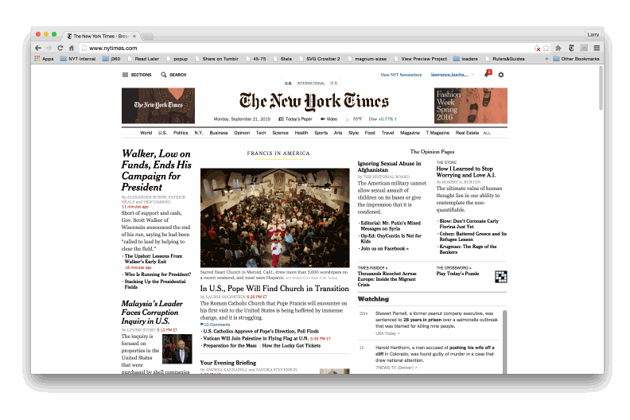
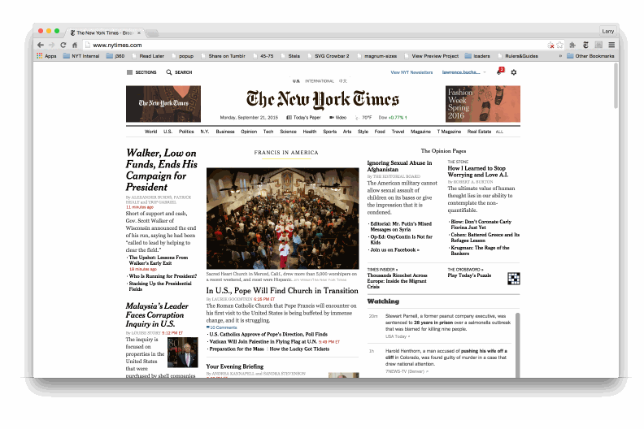
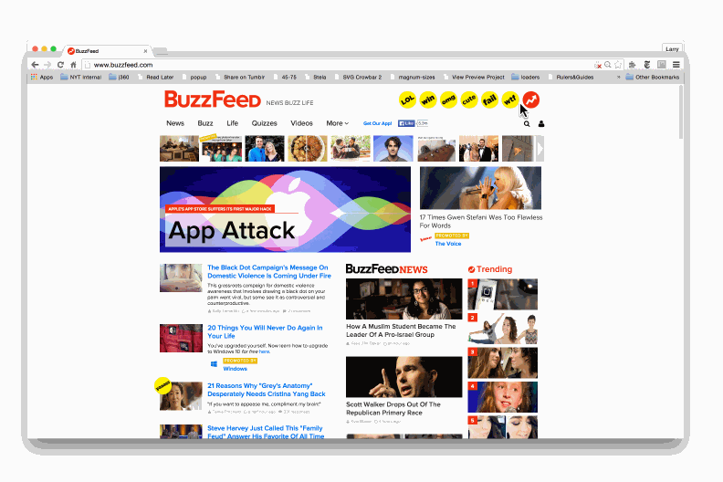
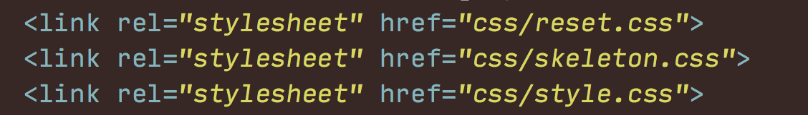
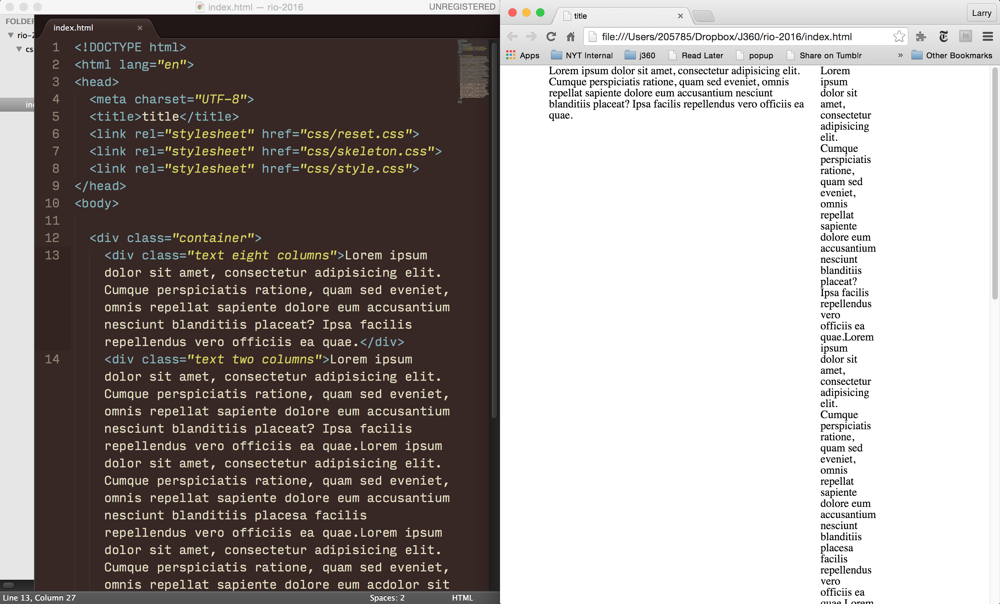

Lesson 5 — A Simple Assignment.
September 28.Just a code review with me.
Goal To think about grids, how they're structured, how they help, and how they can give form to content.
due Your assignment is due Friday before midnight.
Lost? Drop any and all questions in Slack. I'll have office hours this week in the from 8:30 to 9:30 p.m. on Thursday in Ernie Pyle Hall. That's right, I'm in Bloomington this week and next week.
1. Don't use <hr>s. Use borders instead.
There are very few times you want to actually use an <hr> tag to crate a line. It's better to use borders instead. You have more control over them.
Headings that do the same job get the same tag.
<h1> we use on a page once, for the most important thing. <h2>s come next, then <h3>s, etc. until <h6>s. In the last lesson, all of the questions were the same size, style, importance, etc. So they should have all been <h2>s.
Everything goes inside your <body> tag (except linking your css and your <title>
All of the code you want visible to the browser should go inside your <body> tag. You shouldn't wrap your body tag inside anything.
Start to redesign your portfolio site. As you learn more skills each week, put those back into your portfolio site. Link all of your projects to your site with a date, title, and description.
Grids give order to content and establish hierarchy.
Take a look here at The New York Times site and it's underlying grid.
Pretty simple 6 equal columns. And then how that grid gets split up into chunks.
Notice how by sticking to the 6 columns, things feel organized and even, but some things feel more important than others. By using grids as the basis for our layout, we can start to signal to readers what's most important.
Here's Buzzfeeds grid.
Now that you've seen the underlying grids here, you'll start seeing them everywhere.
There are many different ways to create a grid in CSS. There are also many different frameworks you can use. We're going to start by using a framework called Skeleton. Skeleton gives us a 12-column 960px-wide fluid grid that we can implement pretty easily. It's just a bunch of css that some very kind person wrote and let's everyone use for free. Gotta love the internet.


... this week is to create a web poster based on the work of Josef Müller-Brockmann for the 2016 Olympics in Rio. More details are at the bottom.
Here we go. I'll get you up and running, and then leave you to finish.
We're going to start a project like we always do. You should be getting pretty familiar with this by now. Create a new repo called rio-2016, set up your file structure, make your index.html file, paste in our HTML boilerplate, add your css folder and your style.css file, add a reset.css stylesheet, add one line of style to your style.css and preview it in the browser to make sure everything is all good.
Download this css file. And include it after your reset, but before your style.css like this:
Like I said, this is just a chunk of css that we can use to make our live easier. Copying and pasting code is almost always OK, as long as you attribute it. Give props where props are due. Build those code Karma points.
OK, anyway, Skeleton is super easy to use. First things first, you have to wrap everything in a div with a class of container.
Like I said above, Skeleton gives us a 960px-wide 12-column grid to start. So, once you have your html structured how you want it, you can simply add classes to divs to signify rows and columns.
If you wanted something to be two columns wide you add the classes two and columns to the thing you wanted to be two columns.
And what it looks like when you get to 8 columns.
When you're ready to start a new row, simply add the class row to the div wrapping the row.
You can offset your columns — move them over by a certain number of columns — by adding classes like offset-by-one column and offset-by-eight columns.
There's a ton of great, open-source stuff out there like Skeleton and most of it has documentation associated with it. The documentation explains how to use a chunk of code. So, if you get lost, or don't know how to do something, it's likely in the documentation. The notes for Skeleton live here in case you get stuck. Learning to read documentation is super helpful. What a better time to learn than now?
The assignment is to create a web poster based on the work of Josef Müller-Brockmann for the 2016 Olympics in Rio.

Here's some text you might include. Think about what's most important.
2016 Summer Olympics
Rio de Janeiro, Brazil
306 events
28 sports
Opening ceremony August 5
Closing ceremony August 21
List of events
Diving
Swimming
Synchronized swimming
Water polo
Archery
Badminton
Basketball
Boxing
Canoeing
Cycling
Equestrian
Dressage
Fencing
Field hockey
Football
Golf
Gymnastics
Handball
Judo
Modern pentathlon
Rowing
Rugby
Sailing
Shooting
Table tennis
Taekwondo
Tennis
Triathlon
Volleyball
Weightlifting
Wrestling
More of Brockmann's work.
... don't forget to validate your code, push it up to the master branch, then create a gh-pages branch, and push it to that branch to publish to the web.
I'd also recommend adding Skeleton to your portfolio site, to more easily design, code and keep that site organized.
To think about grids, how they're structured, how they help, and how they can give form to content.
Thinking about how html is structured, and to start to apply more advanced css techniques.
By the end of this lesson, you’ll have turned your portfolio site into a minimalist masterpiece.
By the end of this lesson, you’ll have a website live on the internet. No training wheels.
Thanks for enrolling in this course. The Internet is a fun place, so this should be fun.